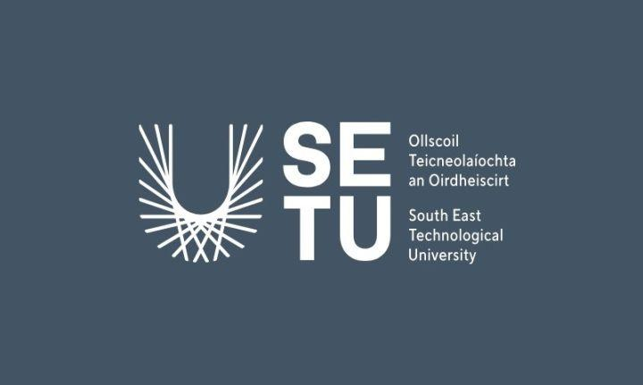

Learning
Developing new knowledge and improving my skills through college work and different learning experiences.

01 / THE BEGINNING
My first couple of months at South East Technological University in Waterford have been such an experience. Starting college is a big change because you are introduced to a different environment, new people and new responsibilities.
At the beginning, everything felt quite new. Getting used to the college environment and understanding how everything works takes some time, but I feel like I am gradually settling in.
One of the best things so far has been getting to know a couple of people in my class. It makes the experience more enjoyable when you have people around you who you can talk to, learn with and share experiences with.
I know there is still a lot for me to experience and learn, but I am looking forward to seeing how the rest of my college journey develops.
02 / SETTLING IN
College is not just about attending classes and completing assignments. It is also about learning how to manage your time, becoming more independent and taking responsibility for your own progress.
I am still getting used to certain aspects of college life, but I see it as part of the process. Every week gives me another opportunity to improve and become more comfortable in my surroundings.
Developing new knowledge and improving my skills through college work and different learning experiences.
Getting to know people in my class and building friendships along the way.
Becoming more independent, confident and motivated to achieve my goals.
03 / LOOKING FORWARD
One thing I want to promise myself is that I will continue pushing beyond what I think I am capable of. I don't want to look back in a few years and feel like I could have done more with the opportunities I was given.
I want to make the most of my time at SETU, improve academically, develop new skills and become someone who is confident in what they can achieve.
THE JOURNEY CONTINUES
Looking back at my first few months, I can already see that college is going to be an important part of my life. There will probably be challenges along the way, but I want to take every experience as an opportunity to learn something.
I am excited to see what the future holds at SETU. For now, my main focus is to keep showing up, stay motivated and make the most of every opportunity.
This is just one chapter of my story, and I am looking forward to what comes next.
SETU is a university with campuses across the South East of Ireland. You can explore its courses, student services and campus information through its official website.
Visit the SETU Website →Thanks for taking the time to learn a little more about me. Feel free to explore the other pages and discover more of my interests.